ENGINEERING BLOG / CHAPTER 02 OF 10
From RNNs to the Transformer
Chapter 1 ended with a limitation: Word2vec embeddings are static. This chapter revisits the recurrent models (RNNs, LSTMs) that dominated before 2017, shows why their sequential nature became a bottleneck, introduces the attention mechanism, and then assembles the full encoder–decoder Transformer, finishing with an end-to-end translation example. By the end you should understand why the Transformer was such a leap and have a mental model of every block inside it.
2.1 — Recurrent Neural Networks
To model a sequence, the pre-Transformer answer was recurrence: process tokens one at a time, carrying a hidden state that summarizes everything seen so far. RNNs were first introduced in the 80s; they are a class of neural networks where connections form a temporal sequence.
Definition. A Recurrent Neural Network (RNN) processes a sequence token by token, updating a hidden state from the current input and the previous state , so that encodes the history of the sequence.
Intuition. Think of reading a sentence while keeping a running mental summary. At each word you update that summary. The same weights are reused at every step (parameter sharing across time), which is what lets an RNN handle variable-length input.
The recurrent update: the new state mixes the previous state and the current input.
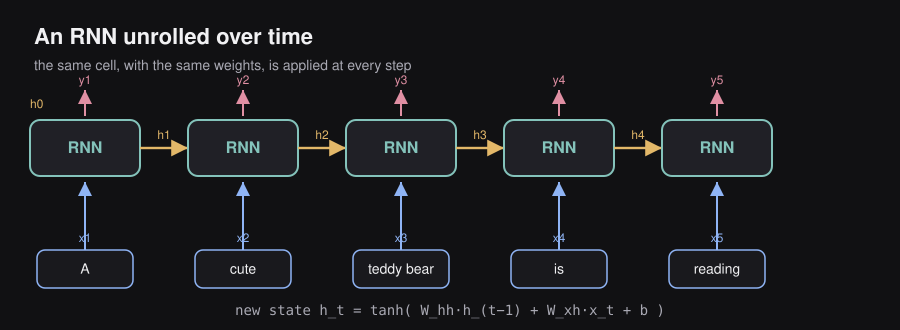
On our running example the RNN reads A, then cute, then teddy bear, then is, then reading, each time passing its hidden state to the next step.
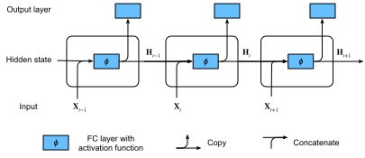
What do we do with the hidden states?
The same recurrent network can be wired for the three NLP shapes of Chapter 1:
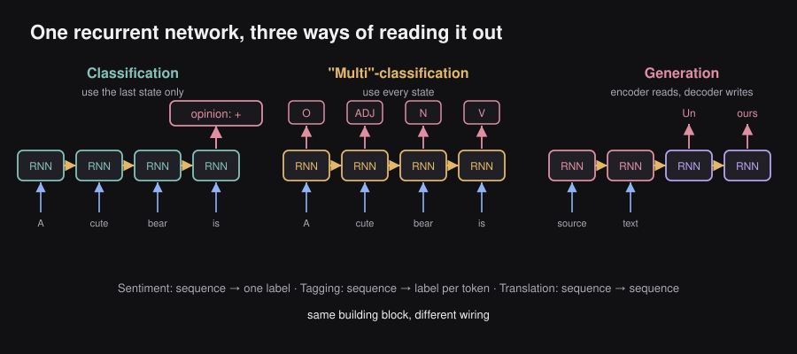
- Classification (e.g. sentiment): the last hidden state is fed to a classifier that outputs the opinion.
- “Multi”-classification (e.g. tagging): every hidden state is fed to a classifier that outputs one tag per token.
- Generation (e.g. translation): a source text is read by one RNN and an output text is produced by another.
Key insight. RNNs are inherently sequential: step cannot be computed until step is done. This kills parallelism on modern GPUs and makes long sequences slow to train — a key motivation for the Transformer.
2.2 — The vanishing-gradient problem and LSTMs
Definition. A Long Short-Term Memory (LSTM) network is an RNN variant that adds a separate cell state and three gates (input, forget, output) to control what information is kept, discarded, or exposed at each step.
LSTMs were introduced in the 1997 paper “Long short-term memory”; they use a more structured approach in the cell’s hidden state.
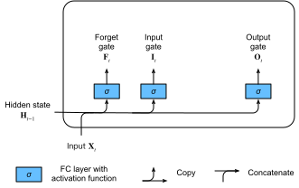
Intuition. Vanilla RNNs struggle to remember information across many steps because gradients shrink (vanish) as they are back-propagated through time. The LSTM’s gated cell state acts like a conveyor belt with controllable valves: information can flow far down the sequence almost untouched, letting the network learn long-range dependencies.
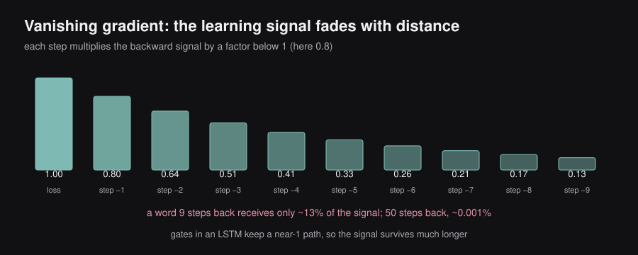
Example. In the sentence ‘The keys to the cabinet … are on the table’, the verb ‘are’ must agree with ‘keys’, not ‘cabinet’. An LSTM can carry the plural information across the intervening words far better than a plain RNN.
Key insight. LSTMs mitigated but never eliminated the sequential bottleneck and the difficulty of very long-range dependencies. The field needed a fundamentally parallel way to mix information across a sequence.
Summary of main methods so far (non-exhaustive list)
| Method | Pros | Cons |
|---|---|---|
| Word2vec (e.g. CBOW, Skip-gram) | Very simple, yet powerful; intuitive embeddings | Word order does not count; embeddings not context aware |
| Recurrent Neural Networks (e.g. traditional RNN, LSTM) | Word order matters; state-of-the-art results | Vanishing gradient problem; slow computations |
2.3 — History of attention
- Attention was introduced in 2014 (“Neural Machine Translation by Jointly Learning to Align and Translate”, Bahdanau et al.).
- Translation tasks had a real issue with long-term dependencies.
- Seq2seq was unable to “remember” what the input sentence was saying.
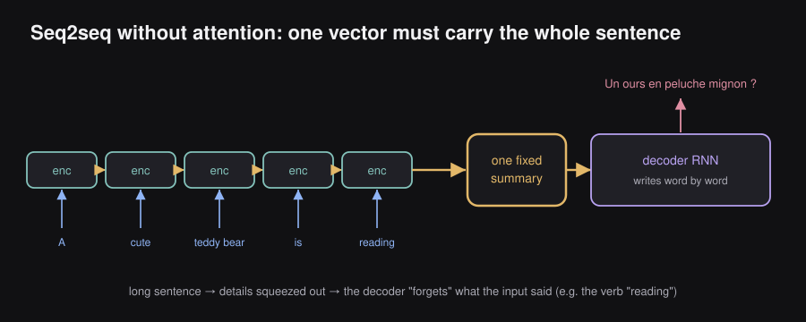
Picture an encoder that has read “A cute teddy bear is reading” and a decoder that has produced “Un ours en peluche mignon” and now has to say the next word — “lit”. All it has is the single summary vector passed from the encoder, which has lost much of what the input sentence was saying. Attention was introduced as an add-on to RNN translation models, letting the decoder ‘look back’ at all encoder states instead of relying on a single fixed summary vector.
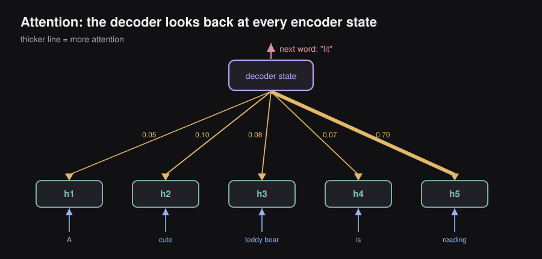
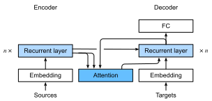
The Transformer took this idea and made it the only mechanism.
2.4 — The attention mechanism
Definition. Attention computes an output for each position as a weighted average of value vectors, where the weights (how much to attend) come from the compatibility between a query vector and the corresponding key vectors.
Intuition. Think of a soft dictionary lookup. The query asks ‘what am I looking for?’; each key advertises ‘what do I contain?’; the dot product query·key scores the match; a softmax turns scores into weights; the output is the weighted blend of values. Unlike a hard lookup, you retrieve a mixture of all entries, weighted by relevance — and crucially every position can be computed in parallel.
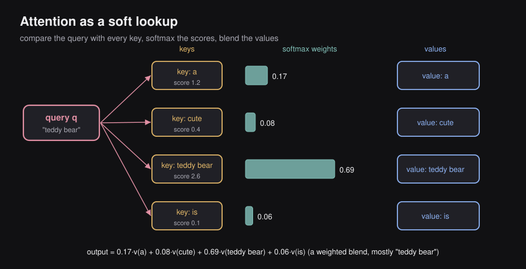
Given a query , we want to know which key the query should pay “attention” to with respect to the associated value . For the query of “teddy bear”, the scores are turned into weights that multiply and are summed.
Attention can be computed efficiently with matrices , , that contain the queries , keys and values respectively, along with the dimension of the keys. Scaled dot-product attention, the heart of the Transformer:
Queries Q, keys K, values V; the scaling keeps the softmax in a stable regime.
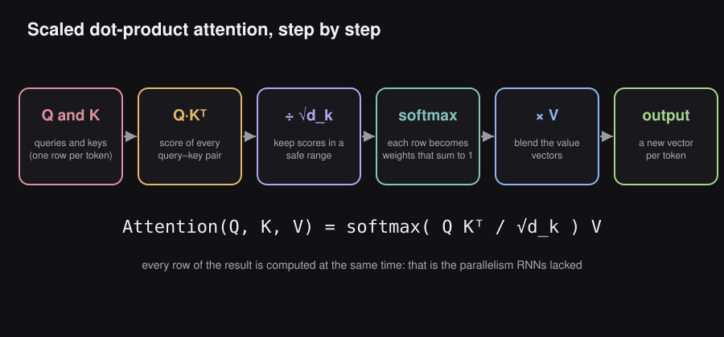
Example. Resolving ‘it’ in ‘The animal didn’t cross the street because it was too tired’: the query from ‘it’ matches the key of ‘animal’ more strongly than ‘street’, so attention pulls ‘animal’‘s value into the representation of ’it’. Self-attention is how the model performs coreference for free.
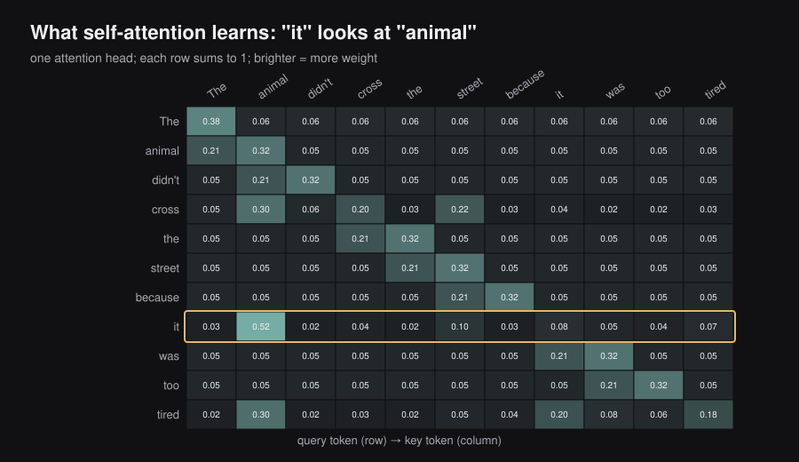
Key insight. The scaling matters: without it, large dot products push the softmax into saturated regions where gradients vanish. Dividing by keeps variance ≈ 1 and training stable.
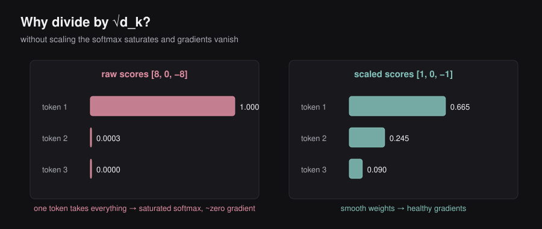
Multi-head attention
Definition. Multi-head attention runs several attention operations (‘heads’) in parallel on different learned projections of Q, K, V, then concatenates and linearly recombines their outputs.
Intuition. One attention pattern can only capture one type of relationship at a time. Multiple heads let the model attend to different things simultaneously — one head may track syntax, another long-range coreference, another local phrasing — much like using several convolutional filters in a CNN (multiple filters of a convolutional layer in computer vision).
Heads are computed independently then merged by the output projection . The layer is composed of attention heads, each with its own matrices that project the input to obtain queries, keys and values.
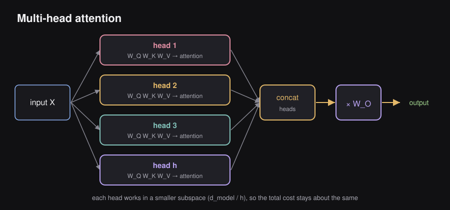
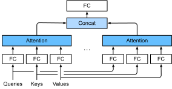
Key insight. Each head works in a lower-dimensional subspace (), so multi-head attention adds expressive power at roughly the same compute as a single full-width head.
2.5 — The Transformer architecture
Introduced in ‘Attention Is All You Need’ (Vaswani et al., 2017), the Transformer stacks attention and feed-forward layers with residual connections and layer normalization, dispensing with recurrence entirely. It relies on the self-attention mechanism and gave state-of-the-art results on machine translation tasks. The original design is an encoder–decoder built for translation.
Definition. The Transformer is a sequence-to-sequence architecture made of an encoder stack (which builds contextual representations of the input) and a decoder stack (which generates the output autoregressively), connected by cross-attention, using only attention and feed-forward layers — no recurrence or convolution.
Intuition. Read the diagram bottom-to-top. Inputs are embedded and given positional information; the encoder refines them with self-attention + feed-forward blocks; the decoder generates one token at a time, attending both to what it has produced so far (masked self-attention) and to the encoder’s output (cross-attention); a final linear + softmax produces a probability over the vocabulary.
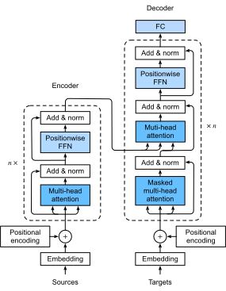
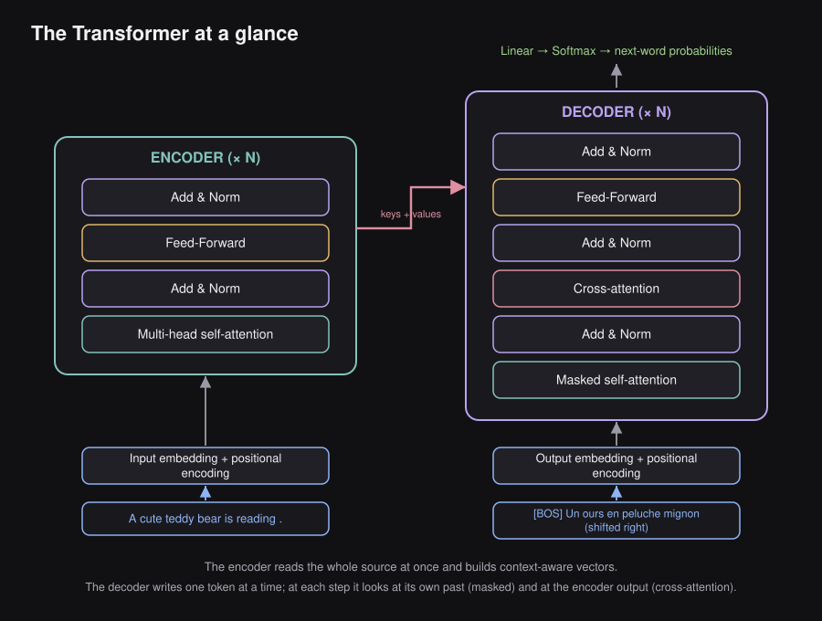
The main building blocks are:
- Attention layer (MHA): self-attention (encoder–encoder, decoder–decoder) and the encoder–decoder attention layer
- Feed Forward Neural Network (FFNN)
- Positional Encoding (PE)
Key insight. Three ingredients make every block trainable at depth: (1) residual connections (Add) give gradients a shortcut, (2) layer normalization stabilizes activations, and (3) the position-wise feed-forward network adds non-linear capacity. Attention mixes information across positions; the FFN processes each position independently.
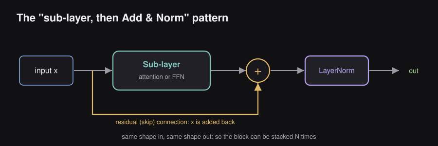
Input
- Text is “tokenized”.
- Learned embeddings for tokens.
Parameters: is the vocabulary size and is the number of embedding dimensions.
Positional encoding — the ‘trick’
Definition. Positional encoding injects information about token order into the otherwise order-agnostic attention mechanism, typically by adding sinusoidal vectors to the input embeddings.
Intuition. Attention is permutation-invariant: shuffle the input tokens and the set of outputs is just shuffled too — the model has no inherent sense of order. Since word order carries meaning (‘dog bites man’ ≠ ‘man bites dog’), we must add position information explicitly. The original paper uses sine and cosine waves of different frequencies so that each position gets a unique, smooth fingerprint.
Even dimensions use sine; odd dimensions use cosine. Different give different wavelengths.
The idea is to add position information to the inputs. It can be either learned or hardcoded, and the goal is to let the model understand the relative position of the inputs: the dot product of two position vectors is at its maximum for equal positions and decreases as positions move apart.
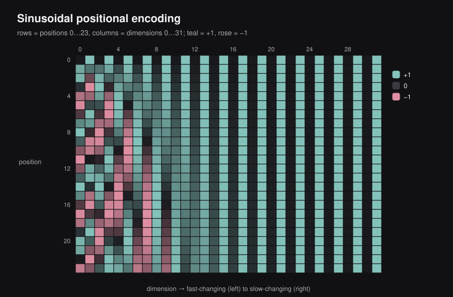
Key insight. Because attention has no recurrence or convolution, position must be supplied as data. Chapter 3 revisits this with relative and rotary (RoPE) schemes that have since become standard.
Encoder
- Encoder–encoder attention / self-attention
- Feed Forward Neural Network
- Normalization layer
Parameters: (layers stacked), (number of attention heads), , , (sub-layer dimensions) and (embedding dimensions).
Output “shifted right”
- Learned embeddings for output tokens.
- In practice, the output starts with
[BOS]during translation.
Parameters: (vocabulary size) and (embedding dimensions).
Masked self-attention and ‘shifted right’ output
Definition. Masked (causal) self-attention prevents each decoder position from attending to future positions, so that predicting token can only use tokens .
Intuition. During training we feed the whole target sentence at once for efficiency, but the model must not ‘cheat’ by peeking at the answer. A causal mask sets the attention scores to future tokens to before the softmax, so their weights become zero. The decoder input is the target sequence ‘shifted right’ by one (prefixed with a start token) so that at each step it predicts the next token.
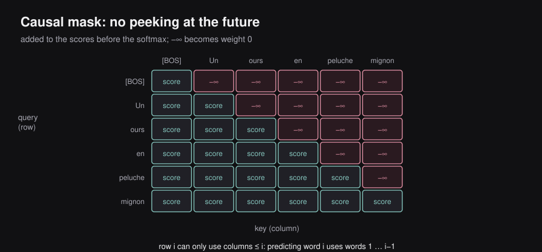
Key insight. This causal masking is exactly what later turns the decoder into a standalone language model — the backbone of GPT-style LLMs in Chapter 5.
Decoder
- Decoder–decoder attention / self-attention
- Encoder–decoder attention
- Feed Forward Neural Network
- Normalization layer
Parameters: , , , , and , as in the encoder.
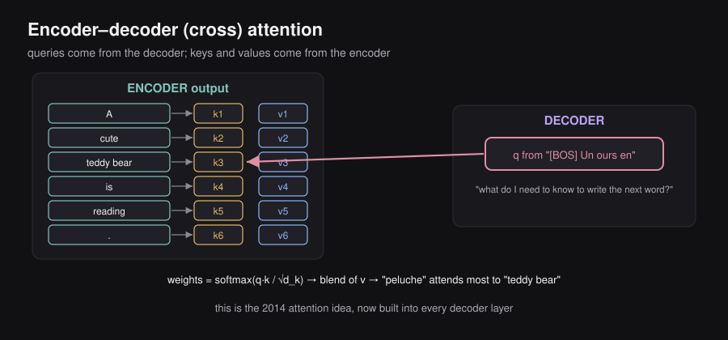
Output
- Linear projection.
- A classification problem that outputs the probability of belonging to a class, where class = word.
Parameters: (vocabulary size) and (embedding dimensions).
Computational tricks
Multi-head attention. Idea: run multiple self-attention layers in parallel. Benefit: it enables the model to capture different attention features in parallel. Comparison: multiple filters of a convolutional layer in computer vision.
Label smoothing. Idea: a 2015 vision paper showed that overconfidence is bad, so introduce noise in the true labels (instead of a probability of exactly 1 for the right word and 0 for all others, soften the target a little). Benefits: it is a general technique that prevents overfitting, and it improves accuracy and the BLEU score.
2.6 — End-to-end example: machine translation
Intuition. Putting it together for English→French: the source sentence is tokenized, embedded, and given positional encodings; the encoder produces a contextual representation of every source token. The decoder then generates the French sentence token by token — at each step it attends to its own previous outputs (masked self-attention) and to the encoder representations (cross-attention), then emits a probability distribution over the vocabulary and picks the next token. This repeats until an end-of-sequence token is produced.
Let us stitch all the pieces together with our example, “A cute teddy bear is reading.”
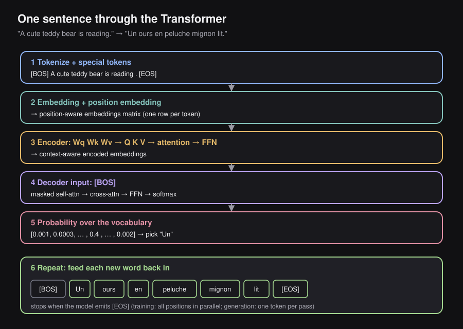
Step 1 — Tokenize. The sentence becomes A | cute | teddy bear | is | reading | . and the special tokens are added: [BOS] A cute teddy bear is reading . [EOS].
Step 2 — Embed. Each token gets an embedding.
Step 3 — Add position. A position embedding is added to each embedding, giving a position-aware embedding per token. Stacked together, these form the position-aware embeddings matrix.
Step 4 — Encode. The matrix goes into the encoder. Inside the self-attention layer, three learned matrices , , turn the matrix into , and . Each token’s query is compared with every token’s key, the resulting weights are applied to , and the heads are recombined with . The result goes through the feed-forward network. After the encoder stack, each token has a context-aware encoded embedding.
Step 5 — Start decoding. The decoder receives the encoded embeddings and the first output token [BOS]. It passes through the self-attention layer (masked), the encoder–decoder attention layer and the feed-forward network. A softmax layer then produces a probability for every word in the vocabulary — a vector such as [0.001, 0.0003, …, 0.4, …, 0.002]. The most probable word is Un.
Step 6 — Repeat. Un is fed back in: the decoder now reads [BOS] Un and produces ours; then en, peluche, mignon, lit and finally [EOS]. The output is “Un ours en peluche mignon lit.”
Example. Translating ‘The cat sat’ → ‘Le chat s’est assis’: when generating ‘chat’, cross-attention focuses on ‘cat’; when generating the verb, it blends ‘sat’ with the already-produced French subject to get agreement right. Every output token is one full forward pass through the decoder.
Key insight. Training uses ‘teacher forcing’ (feed the true previous tokens) so all decoder positions are computed in parallel; inference is autoregressive and therefore sequential. This train/inference asymmetry recurs throughout this blog (see KV caching in Chapter 6).
2.7 — Chapter summary
- NLP tasks reduce to three shapes: sequence→label (sentiment), sequence→per-token-label (NER), sequence→sequence (translation).
- Tokenization converts text to integer IDs; subword schemes (BPE, WordPiece) balance vocabulary size against out-of-vocabulary handling.
- Word embeddings (Word2vec) place semantically similar words near each other but are static / context-independent.
- RNNs process sequences with a recurrent hidden state but are inherently sequential and suffer vanishing gradients.
- LSTMs add gated cell states to capture longer-range dependencies, yet remain sequential.
- Attention computes a query–key–value weighted average, enabling parallel, content-based mixing across all positions.
- Scaled dot-product attention divides scores by for stable gradients; multi-head attention captures several relations at once.
- The Transformer is an encoder–decoder built only from attention + feed-forward blocks, with residuals and layer norm.
- Positional encoding injects word order into the permutation-invariant attention.
- Masked self-attention + ‘shifted-right’ inputs let the decoder generate autoregressively without peeking at the future.